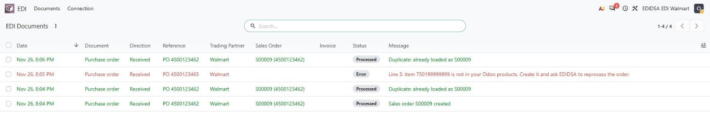

Connection status

Know at a glance that the service is connected and when it last synchronized.
Connects your Odoo with the EDIDSA EDI service for retail chains in Mexico (Walmart and others). Purchase orders arrive as sales orders, and every document is logged with its result. Data-only module: installs on Odoo Online, Odoo.sh and on-premise.

Know at a glance that the service is connected and when it last synchronized.
This module is the Odoo side of the EDIDSA EDI service. It does not exchange documents by itself. The EDI connection with your retail customers (AS2 channel, certificates, identifiers and document set-up) is configured exclusively by EDIDSA on its own infrastructure, together with the connection to your Odoo.
Request activation, a demo or a quote: octavio.cordero@edidsa.com.mx